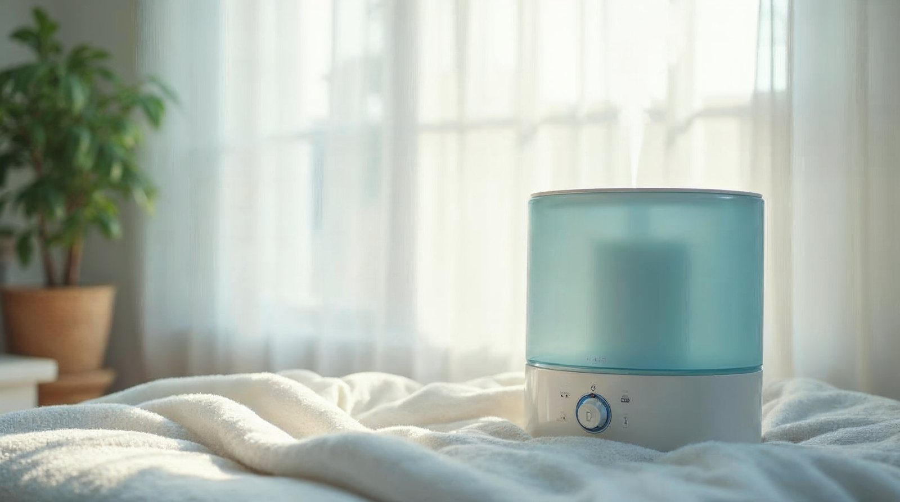
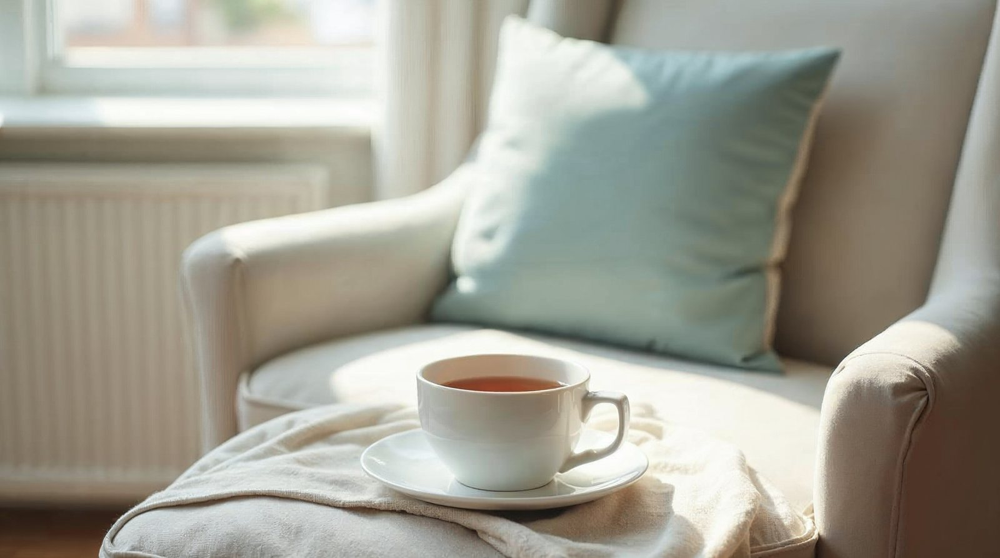
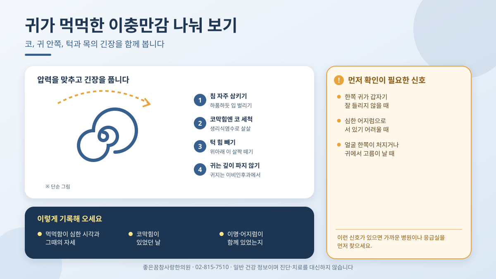

이종호 한의사 감수좋은꿈참사랑한의원 대표원장 (한의사 면허번호 19769)발행 2026-11-26 · 수정 2026-11-26
이 글의 차례
엘리베이터를 타고 높은 층에 올라갈 때처럼 귀가 '먹' 하고 막힙니다. 침을 삼키면 잠깐 뚫리는 것 같다가 다시 먹먹해집니다. 통화할 때 상대 목소리가 멀게 들리고, 내 목소리는 머릿속에서 웅웅 울립니다. 며칠이면 괜찮아지겠지 했는데 벌써 몇 주째입니다.
귀가 꽉 찬 듯 먹먹한 느낌을 이충만감이라고 부릅니다. 이름은 낯설지만 겪어 본 분은 꽤 많습니다. 비행기를 탈 때나 감기에 걸렸을 때 잠깐 생겼다 사라지는 경우가 흔하지만, 오래 이어지면 일상 대화와 집중에 꽤 큰 불편을 줍니다.
이충만감은 하나의 병명이라기보다 여러 원인이 만들어 내는 느낌입니다. 귀 안쪽과 코를 잇는 관이 제대로 열리지 않아도, 귀 속 림프액의 압력이 흔들려도, 턱과 목의 근육이 굳어도 비슷한 느낌이 생깁니다. 그래서 진료실에서는 먹먹함 자체보다 그 느낌이 어떤 모습으로 오는지를 먼저 여쭙습니다.
먹먹함은 눈에 보이지 않아서 주변에 설명하기도 어렵습니다. 대화할 때 자꾸 되묻게 되고, 회의에서 말이 잘 들리지 않아 긴장하게 되며, 그 긴장이 다시 목과 어깨를 굳게 만듭니다. 이런 고리를 함께 풀어 가는 것이 이 글의 목적입니다.
이충만감은 어떤 느낌으로 나타나나요
먹먹함을 표현하는 말은 사람마다 조금씩 다릅니다. 어떤 표현에 가까운지 생각해 보시면 원인을 나누는 데 도움이 됩니다.
- 귀에 물이 들어간 것처럼 막힌 느낌
- 내 목소리나 숨소리가 귀 안에서 크게 울림
- 침을 삼키거나 하품하면 '뽁' 하고 잠깐 뚫림
- 귀 안이 꽉 차서 압력이 느껴지는 느낌
- 소리가 멀게, 솜을 막은 것처럼 들림
침을 삼킬 때 잠깐 뚫리는 느낌이 있다면 귀와 코를 잇는 관의 문제일 가능성이 높습니다. 반대로 삼켜도 변화가 없고 이명이나 어지럼이 함께 온다면 귀 안쪽의 문제를 먼저 살펴봐야 합니다.
왜 귀가 먹먹해질까요
가장 흔한 원인은 귀관이라고도 부르는 유스타키오관의 문제입니다. 이 관은 귀 안쪽 공간과 코 뒤쪽을 이어, 귀 안의 압력을 바깥과 맞추는 일을 합니다. 평소에는 침을 삼키거나 하품할 때 잠깐 열렸다 닫힙니다.
감기나 비염으로 코 점막이 부으면 이 관의 입구도 함께 부어 잘 열리지 않습니다. 그러면 귀 안의 압력이 바깥과 맞지 않아 먹먹해집니다. 감기 뒤 몇 주 동안 먹먹함이 이어지는 것은 이런 경우가 많습니다.
반대로 관이 너무 열려 있어도 먹먹함이 생깁니다. 체중이 갑자기 많이 줄었거나, 몸이 많이 지쳤거나, 물을 적게 드신 경우에 생기기도 하며, 내 목소리와 숨소리가 크게 울리는 것이 특징입니다. 누우면 좋아지고 서 있으면 심해지는 경우가 많습니다.
귀 안쪽의 림프액 압력이 흔들리는 메니에르병, 갑자기 청력이 떨어지는 돌발성 난청도 먹먹함으로 시작할 수 있습니다. 이 두 가지는 이비인후과 진료가 우선이며, 특히 돌발성 난청은 빨리 확인할수록 좋습니다.
턱관절과 목의 긴장도 원인이 될 수 있습니다. 이를 꽉 무는 습관, 오래 고개를 숙이는 자세, 스트레스로 굳은 목과 턱 근육이 귀 주변을 압박해 먹먹한 느낌을 만들기도 합니다. 귀지가 가득 찬 단순한 경우도 있으니 귀 안을 한 번 들여다보는 것도 필요합니다.
메니에르병이나 돌발성 난청과는 어떻게 다른가요
메니에르병은 귀가 먹먹해지는 느낌과 함께 이명, 그리고 몇십 분에서 몇 시간 이어지는 빙빙 도는 어지럼이 반복해서 찾아오는 것이 특징입니다. 발작이 지나가면 먹먹함이 줄었다가 다시 오기를 되풀이합니다.
돌발성 난청은 특별한 이유 없이 한쪽 귀의 청력이 갑자기 떨어지는 것입니다. 아침에 일어났더니 한쪽 귀가 먹먹하고 잘 안 들리는 모습으로 오는 경우가 많아, 단순한 먹먹함으로 여기고 지나치기 쉽습니다. 한쪽 귀가 갑자기 먹먹해졌다면 며칠 기다리기보다 이비인후과에서 청력 검사를 먼저 받아 보세요.
유스타키오관 문제는 대개 코 상태와 함께 움직입니다. 코막힘이 심한 날 먹먹함도 심하고, 침을 삼키면 잠깐 뚫리는 느낌이 있습니다. 이런 차이를 기록해 두시면 진료에 큰 도움이 됩니다.
비행기나 엘리베이터에서 귀가 아플 때는 어떻게 하나요
높이가 빠르게 바뀌면 귀 안과 바깥의 압력 차이가 커집니다. 비행기가 내려올 때나 고층 엘리베이터에서 귀가 먹먹해지는 것이 이 때문입니다. 침을 자주 삼키거나 하품을 하거나, 껌을 씹으면 관이 열리면서 압력이 맞춰집니다.
코감기나 비염이 심한 날 비행기를 타면 관이 잘 열리지 않아 귀가 아플 수 있습니다. 이런 경우 출발 전에 이비인후과에서 상의해 보시길 권합니다. 코를 세게 막고 힘껏 불어 귀를 뚫는 방법은 너무 세게 하면 귀에 무리가 갈 수 있으니 부드럽게 해야 합니다.
병원에서는 어떤 검사를 받아 보면 좋을까요
먹먹함이 일주일 넘게 이어지거나 한쪽만 먹먹하다면 이비인후과에서 귀 안을 들여다보는 진찰과 청력 검사를 받아 보시길 권합니다. 고막이 안쪽으로 당겨져 있는지, 귀 안에 물이 고였는지, 청력이 떨어졌는지를 확인할 수 있습니다.
필요하면 고막이 압력에 따라 얼마나 잘 움직이는지 보는 검사나 코 안을 내시경으로 보는 진찰을 함께 하기도 합니다. 이런 결과는 한의원에 오실 때 가져와 주시면 진료 방향을 정하는 데 큰 도움이 됩니다.
검사에서 큰 이상이 없다는 말을 들었는데도 먹먹함이 이어지는 분이 계십니다. 그럴 때는 피로와 잠, 목과 턱의 긴장, 코의 상태처럼 검사로 잘 드러나지 않는 흐름을 함께 들여다보게 됩니다.
먹먹함에 대해 자주 헷갈리는 것
첫째, 귀가 막혔으니 귀를 파야 한다는 생각입니다. 먹먹함의 대부분은 귀지보다 귀 안쪽의 압력 문제입니다. 면봉이나 귀이개로 깊이 파면 오히려 귀 안을 자극해 불편이 커질 수 있습니다.
둘째, 먹먹함은 저절로 사라질 테니 기다리면 된다는 생각입니다. 감기 뒤의 가벼운 먹먹함은 그럴 수 있지만, 한쪽만 갑자기 먹먹하고 소리가 작게 들린다면 기다리기보다 먼저 확인하는 편이 좋습니다.
셋째, 이명과 먹먹함은 같은 것이라는 생각입니다. 함께 오는 경우가 많지만, 소리가 들리는 것과 막힌 느낌은 서로 다른 신호입니다. 어느 쪽이 먼저 시작되었는지, 어느 쪽이 더 불편한지 나눠서 말씀해 주시면 도움이 됩니다.
한의학에서는 귀 먹먹함을 어떻게 보나요
한의학에서는 귀를 신장과 간, 그리고 몸 위쪽으로 오르는 열과 연결해 살펴 왔습니다. 피로가 쌓이고 잠이 부족할 때 귀가 먹먹해지는 경우, 화가 나거나 긴장하면 얼굴이 달아오르며 귀가 막히는 경우, 소화가 더디고 몸이 무거우면서 귀가 답답한 경우처럼 같은 먹먹함이라도 바탕이 다르게 나타납니다.
그래서 진료실에서는 귀만이 아니라 잠, 피로, 긴장, 소화, 코 상태를 함께 여쭙습니다. 목과 어깨, 턱 주변 근육의 긴장도 직접 확인합니다. 귀 뒤와 목 옆을 눌렀을 때 뻐근한 자리가 있는지도 함께 봅니다. 귀를 둘러싼 몸 전체의 흐름을 보는 것이 한의원 진료의 출발점입니다.

계절과 생활에 따라 달라지는 먹먹함
먹먹함은 코와 가깝다 보니 계절을 탑니다. 환절기에 비염이 심해지는 분, 겨울 감기 뒤에 코가 오래 막히는 분은 먹먹함도 같은 시기에 찾아오는 경우가 많습니다. 건조한 실내에서 코가 마르면 관의 입구도 예민해집니다.
생활 리듬도 영향을 줍니다. 야근이 이어지고 잠이 부족한 주, 큰 발표를 앞두고 긴장한 주에 먹먹함이 심해졌다는 분이 적지 않습니다. 수영이나 다이빙을 즐기시는 분, 비행기를 자주 타시는 분도 압력 변화가 잦아 먹먹함을 자주 겪습니다.
먼저 이렇게 여쭙니다
처음 오시면 대략 이런 순서로 여쭙니다. 미리 생각해 오시면 이야기가 수월해집니다.
- 먹먹함은 한쪽인가요, 양쪽인가요? 언제부터인가요?
- 갑자기 왔나요, 서서히 왔나요? 감기 뒤였나요?
- 침을 삼키거나 하품하면 잠깐 뚫리나요?
- 이명, 어지럼, 청력 저하, 귀 통증이 함께 있나요?
- 코막힘이나 비염이 있나요?
- 이를 꽉 무는 습관이나 턱 소리가 있나요?
최근 체중이 많이 줄었는지, 잠이 부족했는지, 큰 스트레스가 있었는지도 여쭙니다. 먹먹함이 시작된 시기와 생활의 변화가 겹치는 경우가 적지 않습니다.
일상에서 먼저 해 볼 수 있는 것
먹먹함의 원인에 따라 도움이 되는 것이 다르지만, 대부분의 경우에 무리 없이 해 볼 수 있는 것들이 있습니다.
- 침을 자주 삼키고 하품하듯 입을 크게 벌렸다 닫기
- 코막힘이 있다면 생리식염수 코 세척 해 보기
- 실내 습도를 40~60% 정도로 맞추기
- 이를 꽉 무는 습관을 알아차리고 턱 힘 빼기
- 목과 어깨를 천천히 돌려 긴장 풀기
- 잠드는 시각을 일정하게 맞추고 카페인 줄이기
샤워 뒤 귀에 물이 들어간 느낌이 남으면 고개를 기울여 자연스럽게 빠지도록 기다리고, 귓바퀴 바깥만 수건으로 닦아 주세요.
면봉으로 귀를 깊이 파는 것은 피해 주세요. 귀지를 오히려 안으로 밀어 넣거나 귀 안을 다치게 할 수 있습니다. 귀지가 의심되면 이비인후과에서 확인하고 제거하는 것이 안전합니다.
이어폰은 볼륨을 낮추고 한 시간에 한 번은 빼서 귀를 쉬게 해 주세요. 먹먹함이 있는 동안에는 노이즈 캔슬링 기능을 오래 켜 두기보다, 귀가 바깥 소리에 자연스럽게 익숙해지도록 쉬는 시간을 넉넉히 두는 편이 편안하다는 분이 많습니다.
이를 꽉 무는 습관이 있다면 하루에 몇 번 혀끝을 윗니 뒤에 가볍게 대고 위아래 이를 살짝 떼어 보세요. 턱 근육이 풀리면서 귀 주변이 한결 가벼워지는 것을 느끼시는 분이 있습니다.
한의원에서 함께 살필 수 있는 경우
- 이비인후과 진료를 받았지만 먹먹함이 오래 남는 경우
- 피곤하거나 잠이 부족하면 귀가 먹먹해지는 경우
- 목과 어깨, 턱이 굳으면서 귀가 답답해지는 경우
- 긴장하거나 화가 나면 얼굴이 달아오르며 귀가 막히는 경우
- 이명이 함께 있어 잠들기 어려운 경우
좋은꿈참사랑한의원에서는 먼저 아래의 '먼저 확인이 필요한' 신호가 없는지 살핍니다. 그다음 맥을 짚고 잠, 피로, 긴장, 코 상태를 함께 여쭤 먹먹함을 만드는 흐름을 정리합니다. 목과 턱 주변의 굳은 자리도 직접 확인합니다.
진찰 뒤 지금 상태에 맞춰 침 치료, 목과 턱의 긴장을 푸는 생활 안내, 한약 상담 가운데 필요한 것을 고릅니다. 한약은 드시는 약을 모두 확인한 뒤 신중하게 정하고, 임신 중이시라면 먼저 알려 주시고 산부인과와 상의하도록 안내합니다. 이비인후과에서 처방받은 약은 상의 없이 멈추지 않으셔야 합니다.
이렇게 기록해 오시면 상담이 쉬워집니다
먹먹함은 하루 사이에도 오르내림이 있어서 일주일만 적어 보셔도 흐름이 보입니다.
- 먹먹함이 심했던 시각과 그때의 자세(서 있음, 누움)
- 코막힘이 있었던 날 표시
- 이명이나 어지럼이 함께 있었는지
- 잠든 시각과 깬 시각
- 긴장했거나 이를 꽉 물었던 상황
기록을 보면 코와 함께 움직이는지, 자세에 따라 바뀌는지, 피로와 긴장에 따라 오르내리는지가 드러납니다. 그 차이가 원인을 나누는 실마리가 됩니다. 비행기를 탔거나 수영을 한 날, 감기 기운이 있었던 날도 함께 표시해 두시면 좋습니다.

먹먹함과 차분히 지내는 법
먹먹함은 크게 들리지 않는 만큼 마음을 계속 귀 쪽으로 끌어당깁니다. 조용한 밤이면 더 또렷하게 느껴지고, 신경을 쓸수록 더 막힌 것 같은 기분이 듭니다. 잠자리에 작은 소리로 잔잔한 음악이나 자연의 소리를 틀어 두면 귀에 쏠린 마음이 조금 느슨해지는 분이 많습니다.
이번 주에는 침 자주 삼키기, 턱 힘 빼기, 잠 시각 맞추기 가운데 하나만 골라 이어 가 보세요. 다음에 오시면 그 기록부터 함께 펼쳐 보겠습니다.
이런 증상은 먼저 확인이 필요합니다
- 한쪽 귀가 갑자기 잘 들리지 않거나 먹먹함과 함께 심한 어지럼으로 서 있기 어려운 경우
- 얼굴 한쪽이 처지거나 말이 어눌해지고 귀에서 고름이나 피가 나며 열이 나는 경우
이런 신호가 있으면 한의원보다 가까운 병원이나 응급실을 먼저 찾으세요.
함께 읽으면 좋은 글
- 갑자기 한쪽 귀가 잘 안 들리는 돌발성 난청, 병원 치료와 함께 회복기에는 무엇을 살피나요?
- 귀가 꽉 막힌 듯 먹먹하다가 빙빙 도는 어지럼이 몇 시간씩 오는 메니에르병은 어떻게 살피나요?
- 귀에서 소리가 들리는 이명이 있을 때는 어떤 점을 살펴보나요?
- 시끄러운 지하철로 출퇴근한 뒤 귀가 먹먹하고 삐 소리가 날 때는 어떻게 살피나요?
- 코막힘과 누런 콧물이 오래가는 만성 부비동염(축농증)은 어떻게 살피나요?

여쭙는 것
- 먹먹함은 한쪽인가요, 양쪽인가요? 언제부터인가요?
- 갑자기 왔나요, 서서히 왔나요? 감기 뒤였나요?
- 침을 삼키거나 하품하면 잠깐 뚫리나요?
생활에서 해 볼 것
- 침을 자주 삼키고 하품하듯 입을 크게 벌렸다 닫기
- 코막힘이 있다면 생리식염수 코 세척 해 보기
- 실내 습도를 40~60% 정도로 맞추기
한의원에서 함께 살필 것
- 이비인후과 진료를 받았지만 먹먹함이 오래 남는 경우
- 피곤하거나 잠이 부족하면 귀가 먹먹해지는 경우
- 목과 어깨, 턱이 굳으면서 귀가 답답해지는 경우
먼저 확인이 필요한 신호
- 한쪽 귀가 갑자기 잘 들리지 않거나 먹먹함과 함께 심한 어지럼으로 서 있기 어려운 경우
- 얼굴 한쪽이 처지거나 말이 어눌해지고 귀에서 고름이나 피가 나며 열이 나는 경우
한눈에 보는 표
| 구분 | 핵심 |
|---|---|
| 여쭙는 것 | 먹먹함은 한쪽인가요, 양쪽인가요? 언제부터인가요? 갑자기 왔나요, 서서히 왔나요? 감기 뒤였나요? |
| 생활에서 해 볼 것 | 침을 자주 삼키고 하품하듯 입을 크게 벌렸다 닫기 코막힘이 있다면 생리식염수 코 세척 해 보기 |
| 한의원에서 함께 살필 것 | 이비인후과 진료를 받았지만 먹먹함이 오래 남는 경우 피곤하거나 잠이 부족하면 귀가 먹먹해지는 경우 |
| 먼저 확인이 필요한 신호 | 한쪽 귀가 갑자기 잘 들리지 않거나 먹먹함과 함께 심한 어지럼으로 서 있기 어려운 경우 얼굴 한쪽이 처지거나 말이 어눌해지고 귀에서 고름이나 피가 나며 열이 나는 경우 |
자주 묻는 질문
귀가 먹먹할 때 코를 막고 세게 불어도 되나요?
부드럽게 하면 압력을 맞추는 데 도움이 될 수 있지만, 너무 세게 반복하면 귀에 무리가 갈 수 있습니다. 감기나 비염이 심할 때는 특히 조심하시고, 계속 먹먹하다면 이비인후과에서 확인해 보세요.
먹먹함이 며칠째인데 기다려 봐도 될까요?
감기 뒤 양쪽이 조금씩 먹먹한 정도라면 지켜보는 경우도 있지만, 한쪽 귀가 갑자기 먹먹하고 잘 안 들린다면 기다리지 말고 이비인후과 청력 검사를 먼저 받으세요.
스트레스 때문에도 귀가 먹먹해질 수 있나요?
긴장하면 목과 턱 근육이 굳고 잠이 얕아지면서 먹먹함이 심해지는 분이 있습니다. 다만 다른 원인이 없는지 먼저 확인한 뒤 함께 살펴보는 것이 순서입니다.
이어폰을 오래 쓰면 먹먹해질 수 있나요?
큰 소리로 오래 들으면 귀가 지쳐 먹먹하고 울리는 느낌이 생길 수 있습니다. 볼륨을 낮추고 한 시간에 한 번은 이어폰을 빼고 쉬어 주세요.
좋은꿈참사랑한의원은 재진 때 지난번 이야기부터 이어서 여쭙니다. 진료시간과 예약은 오시는 길에서 확인하세요.
어디서 상담받을 수 있나요?
좋은꿈참사랑한의원은 서울 동작구 만양로2길 2 신성빌딩 3층·5층(서울 동작구 상도동, 7호선 상도역 3번 출구 근처)에 있습니다. 한의사 3명(이종호 대표원장, 조영기 수석진료원장, 정원영 진료원장)이 진료합니다. 진료시간은 평일 09:30~20:00(점심 13:00~14:00), 토·일·공휴일 09:30~15:00이며, 방문 전 전화로 확인을 권합니다. 예약은 네이버 예약, 카카오톡 상담, 전화 02-815-7510로 받습니다.
이 글은 일반적인 건강 정보이며 개인의 진단이나 치료를 대신하지 않습니다. 증상이 있거나 복용 중인 약이 있다면 진료를 통해 확인하세요. 치료 효과는 개인마다 다를 수 있습니다.
작성 기준: 일반적으로 알려져 있는 건강 정보를 참고해 정리했습니다(대표원장 감수). 증상 기록은 1~2주 동안 하루 1회, 비슷한 시간에 적어 오시면 지난 상태와 비교하기 쉽습니다.